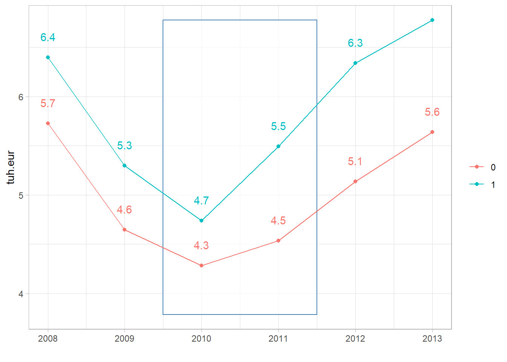
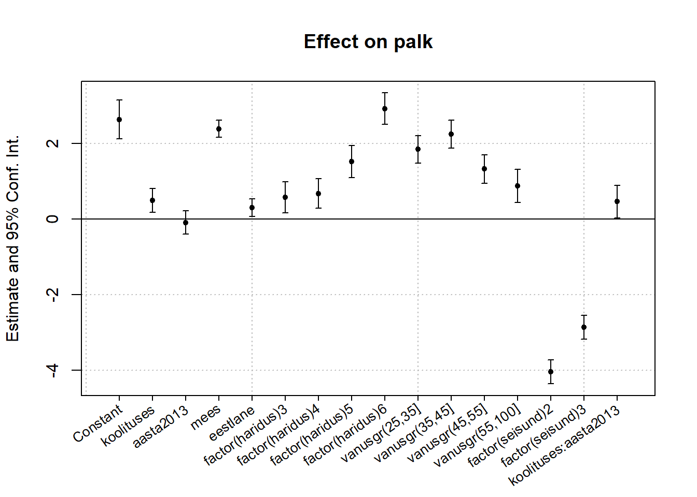
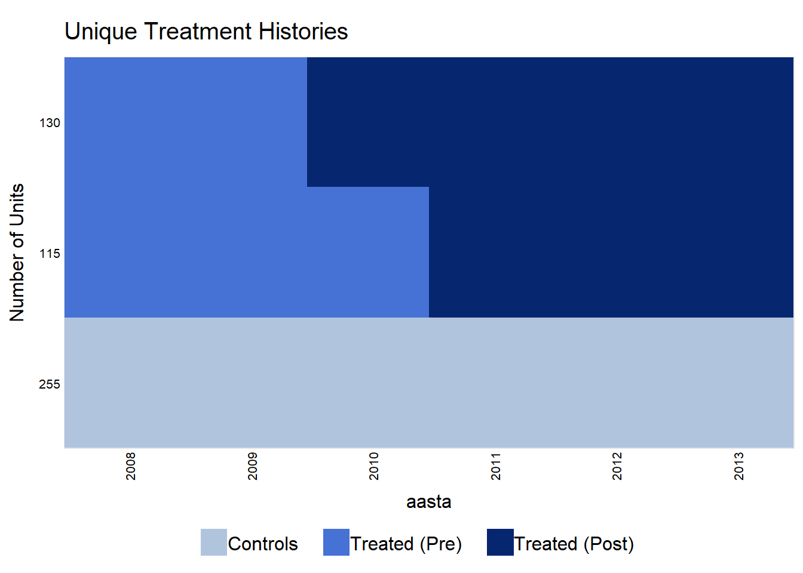
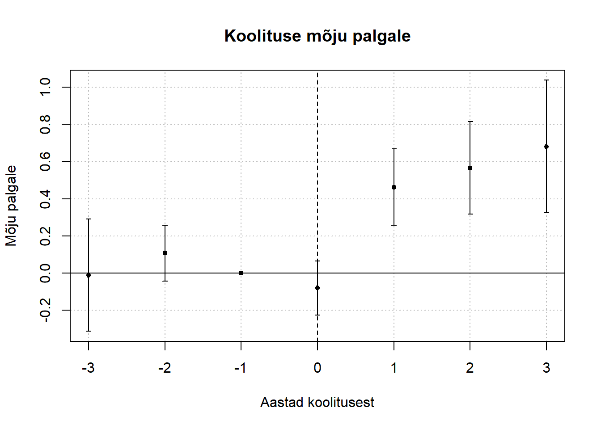

library(dplyr)
library(coefplot)
library(stargazer)
library(fixest)
library(panelView)
library(did)6 Juurdekasvude erinevus (DIF-DIF)
6.1 Mudeli seade
Juurdekasvude erinevuse meetod või erinevuste vahe meetod (Differences-in-Differences, DIF-DIF, DiD) on üks populaarsemaid kvaasi-eksperimentaalseid meetodeid põhjusliku mõju hindamiseks majanduses. See eemaldab ajas muutumatud erinevused osalus- ja võrldusgrupi vahel ja või ka ajas muutuvad tegurid, mis mõjutavad mõlemaid gruppe ühtemoodi.
Klassikaline 2x2 DiD disain
Kõige lihtsamal kujul on meil kaks rühma ja kaks ajahetke:
- Rühmad(\(D\)):
- \(D=1\): Osalusrühm (Treatment), kes saab mingil hetkel sekkumise, nt osaleb tööturukoolituses, osaleb reklaamikampaanias jm.
- \(D=0\): Võrdlusrühm (Control), kes sekkumist ei saa.
- Aeg (\(t\)):
- \(t=1\): Ajahetk pärast sekkumist (Post).
- \(t=0\): Ajahetk enne sekkumist (Pre).
DiD hinnang valemina
DiD hinnang (\(\hat{\delta}_{DiD}\)) leitakse kui erinevus osalejate ajas toimunud muutuse ja võrdlusrühma ajas toimunud muutuse vahel:
\[ \hat{\delta}_{DiD} = \underbrace{(\bar{Y}_{t=1}^{D=1} - \bar{Y}_{t=0}^{D=1})}_{\text{Muutus osalejatel}} - \underbrace{(\bar{Y}_{t=1}^{D=0} - \bar{Y}_{t=0}^{D=0})}_{\text{Muutus võrdlusrühmal}} \] Kus \(\bar{Y}_{T}^{D}\) on tulemuse keskmine vastavas grupis ja ajahetkel.
Kui me vaatame ainult erinevust osalejate grupi piires, siis seda nimetatakse ka enne-pärast hinnanguks (before-after estimator). Pikema aegrea puhul, kus jälgime vaatlusi enne ja pärast meedet, on tegemist aegrea katkemise meetodiga (interrupted time series analysis).
\[ \hat{\delta}_{BA} = (\bar{Y}_{t=1}^{D=1} - \bar{Y}_{t=0}^{D=1}) \]
Sellisel juhul kasutame osalejate mineviku väärtuseid võrdlusseisundina. Seega eeldame, et potentsiaalne tulemus peale meedet, kui meedet ei oleks tegelikult toimunud, on võrdne potentsiaalse tulemusega enne meedet.
\[ E({Y}_{t=1}^{0}|D=1) = E({Y}_{t=0}^{0}|D=1) \]
See eeldab potentsiaalsete tulemuste püsivust ajas ja kõik on seotud sekkumisega. See on võimalik lühikeste programmide korral. Näiteks küsime inimeste teadmisi toote kohta enne ja pärast toote reklaami.
DiD regressioonimudelina
DiD hinnangut saab leida ka lineaarse regressioonimudeli abil, kasutades interaktsiooniliiget:
\[Y_{it} = \alpha + \beta_1 \text{D}_i + \beta_2 \text{Post}_t + \delta*(\text{D}_i \times \text{Post}_t) + \epsilon_{it} \]
Kus:
- \(\alpha\): Kontrollgrupi keskmine enne sekkumist (Constant).
- \(\beta_1\): Gruppidevaheline püsiv erinevus (Treatment Group Effect).
- \(\beta_2\): Ajaline trend, mis on ühine mõlemale grupile (Time Trend).
- ** \(\delta_{DiD}\) **: Põhjuslik mõju ehk huvipakkuv parameeter (ATT). See näitab lisandumist tulemuses, mis tekib ainult osalejatel pärast sekkumist.
Pangem tähele, et DiD meetod leiab mõju osalejate jaoks (ATT - Average Treatment Effect on the Treated).
Paralleelse trendi eeldus ja ATT
DiD meetodi kehtivus sõltub paralleelse trendi eeldusest (Parallel trends assumption). Eeldus väidab, et sekkumise puudumisel oleks osalusrühma keskmine tulemus muutunud ajas samamoodi nagu võrdlusrühmal.
Matemaatiliselt (kasutades potentsiaalseid tulemusi \(Y^0\)):
\[ E[Y^0_{t=1} - Y^0_{t=0} | D=1] = E[Y^0_{t=1} - Y^0_{t=0} | D=0] \]
Kuidas see eeldus tagab, et DiD arvutus annab meile ATT hinnangu? Vaatame seda korra matemaatiliselt.
Meie tegelik eesmärk on leida keskmine mõju osalejatele (ATT) ehk mis oleks meetme mõju (st potentsiaalsete tulemuste erinevus) peale meetme toimumist (ajahetkel \(t = 1\)):
\[ATT = E[Y^1_{t=1} - Y^0_{t=1} | D=1] \] Kuna \(Y^0_{t=1}\) (osalejate tulemus ilma sekkumiseta) ei ole vaadeldav, siis kasutame paralleelse trendi eeldust selle asendamiseks. Teeme selle läbi samm-haaval. Vaata selgitusi peale valemit.
\[\begin{aligned}ATT & = E[Y^1_{t=1} - Y^0_{t=1} | D=1] \\ \text(1) & = E[Y^1_{t=1}|D=1] -E[Y^0_{t=1} | D=1] \\ \text(2) & = E[Y^1_{t=1}|D=1] -E[Y^0_{t=1} | D=1] + \underbrace{E[Y^0_{t=0} | D=1] - E[Y^0_{t=0} | D=1]}_{\text{Liidame ja lahutame}} \\ \text(3) & = \underbrace{E[Y^1_{t=1}|D=1] - E[Y^0_{t=0} | D=1]}_{\text{Tegelik muutus}} - \underbrace{(E[Y^0_{t=1} | D=1] - E[Y^0_{t=0} | D=1])}_{\text{Muutus ilma meetmeta}} \\ \text(4) & = E[Y^1_{t=1}|D=1] - E[Y^0_{t=0} | D=1] - \underbrace{(E[Y^0_{t=1} | D=0] - E[Y^0_{t=0} | D=0])}_{\text{Paralleelse trendi eeldus}} \\ \text(5) & = E[Y_{t=1}|D=1] - E[Y_{t=0} | D=1] - (E[Y_{t=1} | D=0] - E[Y_{t=0} | D=0]) \end{aligned} \]
Rida (1) on see, mis meid tegelikult huvitab ja kirjutame selle lihtsalt pikemalt lahti. Real (2) liidame ja lahutame potentsiaalse tulemuse enne meedet osalusrühma seas. Sisuliselt liidame nulli. Real (3) muudame lihtsat liidetavate järjekorda. Esimene liige on nüüd tegelik muutus osalejatel: \(E[Y^1_{t=1} | D=1] - E[Y^0_{t=0} | D=1]\) ja teine liige on muutus osalejatel, kui sekkumist poleks olnud. Nüüd toome sisse paralleelse trendi eelduse. Eelduse kohaselt on muutus osalejate seas võrdne muutusega võrdlusrühma seas (rida (4) teine pool). Viimaks asendame potentsiaalsed tulemused tegelike väärtustega ja saamegi meie DiD hinnangu.
Seega, kui on täidetud paralleelse trendi eeldus, siis annab taoline arvutus meile mõju osalejate jaoks:
\[ ATT = (\text{Osalusrühma muutus}) - (\text{Võrdlusrühma muutus}) \]
Kahesuunaline fikseeritud efektide mudel (TWFE)
Kui andmed on paneelkujul, st me jälgime palju objekte eri ajahetkedel, kasutatakse lineaarset paneelandmete fikseeritud efektidega mudelit - TWFE mudel (Two-way Fixed Effects model). See on ka 2x2 DiD disaini üldistus, mis lubab, et meil toimuda meetmes osalemine erinevatel ajahetkedel. Näiteks mõned ettevõtted saavad toetust ühel aastal, järgmised teisel aastal jne. Sellisel juhul \(D\) väärtus objekti jaoks sõltub ajahetkest ja tähistame seda \(D_{it}\).
\[ Y_{it} = \alpha_i + \gamma_t + \delta D_{it} + \mathbf{X}_{it}\beta + \epsilon_{it} \]
Kus:
- \(Y_{it}\): Tulemusmuutuja objektile \(i\) ajahetkel \(t\).
- \(\alpha_i\) (Unit Fixed Effects): objektispetsiifiline fikseeritud efekt. See kontrollib kõiki tegureid, mis on objektile \(i\) omased ja ajas ei muutu (nt asukoht, kultuur, geneetika). Asendab ülal olnud \(\text{D}_i\) muutujat.
- \(\gamma_t\) (Time Fixed Effects): ajaspetsiifiline fikseeritud efekt. See kontrollib šokke, mis mõjutavad kõiki objekte antud aastal \(t\) ühtemoodi (nt majanduskriis, seadusemuudatused). Asendab ülal \(\text{Post}_t\) muutujat.
- \(D_{it}\) (Treatment Indicator): Binaarne muutuja, mis on 1, kui objekt \(i\) on ajal \(t\) sekkumise all. Näiteks kui ettevõtte sai toetust 2020. aastal, siis selle ettevõtte jaoks on see muutuja null enne 2020. aastat ja üks 2020. aastal ja edasi.
- \(\delta\): ATT hinnang (eeldusel, et mõju on ajas homogeenne).
- \(\mathbf{X}_{it}\): Muud ajas muutuvad ja objektide vahel erinevad selgitavad tunnused.
See mudel eeldab, et mõju avaldub meetme aastal ja on pärast seda püsiv. Kui mõju tegelikult ajas muutub (näiteks alguses on väike, pärast kasvab), siis ülaltoodud mudel seda ei võimalda leida. Selleks, et näidata ajas toimuvat muutust, kasutatakse dünaamilist mudelit.
Sündmusuuring (Event study)
Sündmusuuring (Event Study) on dünaamiline regressioonimudel, mis võimaldab hinnata meetme mõju muutumist ajas ning testida nii visuaalselt ja ka statistiliselt paralleelse trendi eeldust.
Regressioonivalem
Üldkuju:
\[ Y_{it} = \alpha_i + \gamma_t + \sum_{k=-K, k \neq -1}^{L} \beta_k \cdot D_{it}^k + \mathbf{X}_{it}\beta + \epsilon_{it} \]
Lisandunud muutujate selgitus:
- \(k\): Suhteline aeg sündmuseni (\(t - E_i\), kus \(E_i\) on sündmuse toimumise aeg objekti \(i\) jaoks).
- \(k < 0\): Perioodid enne meedet (Leads).
- \(k \ge 0\): Perioodid pärast meedet (Lags).
- Periood \(k = -1\) on välja jäetud ja kasutame seda referentspunktina
- \(K\) ja \(L\) sõltuvad andmestiku pikkusest, nt vaatame 5 aastat enne ja 5 pärast pärast meedet.
- \(D_{it}^k\): Sündmuse indikaatorid (Event Time Dummies).
- Muutuja on 1, kui objekt \(i\) on ajahetkel \(t\) täpselt \(k\) perioodi kaugusel sündmusest.
- Muutuja on 0 muudel juhtudel.
- \(\beta_k\): Huvipakkuvad koefitsiendid:
- Kui \(k < 0\) (Meetme-eelne periood): \(\beta_k\) näitab erinevust osalus- ja võrdlusrühma vahel enne meedet. See testib paralleelse trendi eeldus. Kui eeldus kehtib, peaksid need \(\beta\)-d olema statistiliselt nullist eristamatud (nulljoone lähedal).
- Kui \(k \ge 0\) (Meetmejärgne periood): \(\beta_k\) näitab meetme dünaamilist mõju \(k\) perioodi pärast sündmust.
- \(k \neq -1\): Väljajäetud kategooria.
- Tavaliselt jäetakse mudelist välja periood vahetult enne sündmust (\(k = -1\)), et vältida multikollineaarsust. Kõiki teisi koefitsiente (\(\beta_k\)) tõlgendatakse selle baasperioodi suhtes. Eeldame, et perioodil 0 tekib esimest korda avatus meetmele. See pisut sõltub, et kas eeldame, et mõju avaldub juba samal perioodil või alates järgmisest perioodist.
Paralleelse trendi eelduse test
Sündmusuuringu spetsifikatsiooni korral saame testida, kas enne meedet paralleelne trend kehtis. See lisab kindlust eeldusel, et paralleelne trend oleks jätkunud ka ilma meetmeta. Seda kontrollime hüpoteesiga, kas kõik kordajad enne meedet on korraga nullid:
\[ H_0: \beta_{-K} = \beta_{-K+1} = \cdots = \beta_{-2} = 0. \]
alternatiivne hüpotees oleks
\[ H_1: \text{vähemalt üks } \beta_k \neq 0, \qquad k < -1. \]
Kasutatakse kas Wald testi või F testi. Kui me ei saa \(H_0\) ümber lükata, siis see on kooskõlas paralleelse trendi eeldusega. See küll tõesta, et paralleelse trendi eeldus kehtib.
Edasiarendused
DiD meetodit võib kombineerida sobitamisega (vt järgmist peatükki). Sellisel juhul tehakse võrdlusrühm eelnevalt sarnaseks osalusrühmaga kasutades meetmele eelnevaid tunnuste väärtusi ja meetmest sõltumatuid tunnuseid. Näiteks inimese sugu, vanus ja palk enne meedet.
DiD meetodil on tänapäeval palju edasiarendusi. Kui meetme mõjus ajas muutub (nt kasvab või kahaneb) ja meetmes osalevad ettevõtted või inimesed eri ajahetkedel (nn staggered design), siis on oht saada tavalise TWFE mudeliga nihkega hinnanguid.
(TODO! Lisada viited olulisematele allikatele) Sun & Abraham (2021, Journal of Econometrics) Callaway & Sant’Anna (2021, Journal of Econometrics) Roth (2022, American Economic Review: Insights).
6.2 Näide pensionipoliitika mõju kohta hõivemäärale
Aastatel 1995–2002 tõusus Eestis pensioniiga meestel 61-lt 63-le eluaastale. (Tegelikult lisaks toimus muutus, et pensionärid võisid samal ajal saada pensioni ja töötada.)
Mis oli nende muutuste mõju 60–64-aastaste meeste hõivemäärale? Kuidas eristada pensionipoliitika muutusi majanduskeskkonna muutusest?
Eeldame, et vanusrühm 60–64 on osalusrühm ja vanusrühm 55–59 on võrdlusrühm, keda pensioniea tõus ei mõjutanud, kuid kelle olukord tööturul on sarnane.
Lähteandmed hõivemäära kohta
| Aasta | 60–64 | 55–59 |
|---|---|---|
| 1995 | 35.8 | 71.8 |
| 2002 | 51.1 | 66.1 |
Hõivemäärad on protsentides.
Me näeme, et hõivemäär kasvas vanusrühmas 60-64 15.3 protsendipunkti.
\[ 51.1 - 35.8 = 15.3 \]
Seega enne-pärast hinnang ütleks, et pensioniea tõus tõi kaasa hõivemäära kasvu 15.3 pp.
Aga samal ajal toimusid muud muutused majanduses. Eeldame, et seda võtab kinni sarnane vanusrühm, keda aga pensioniea tõus otseselt ei mõjutanud, sest pensioniiga oli kõrgem. Näeme, et 55–59-aastaste hõivemäär hoopis vähenes 5.7 protsendipunkti.
\[ 66.1 - 71.8 = -5.7 \]
Seega DiD hinnang, mis võrdleb osalusrühma hõivemäära muutust võrdlusrühma hõivemäära muutusega, on:
\[ \text{DiD} = (51.1 - 35.8) - (66.1 - 71.8) = 15.3 - (-5.7) = 21.0 \]
Seega pensioniea tõus suurendas 60–64-aastaste meeste hõivemäära 21 protsendipunkti. Tegelikes andmetes me näeme seda mõju väiksemana, 15.3 protsendipunkti, sest majanduses läks olukord kehvemaks ja seetõttu hõivemäär vähenes 5.7 protsendipunkti.
Selle hinnangu põhjusliku mõjuna tõlgendamiseks peab kehtima eeldus, et ilma pensioniea tõusuta oleks 60–64- ja 55–59-aastaste hõivemäär muutunud ajas sarnaselt. Tegelikkuses tuleb arvestada, et vanusrühmad võivad erineda muude näitajate poolest (nt haridus, rahvus), mille mõju hõivemäärale võib olla erinev sõltuvalt majanduse olukorrast. Lisaks võivad esineda ka vanusrühmade omavahelised seosed, sest nad konkureerivad omavahel tööturul. (Ei kehti SUTVA eeldus.)
6.3 Näide tööturukoolituse mõju kohta
Kasutame näitena anonümiseeritud andmeid Poliitikauuringute Keskuse Praxis raportist Leetmaa, Võrk, Kupts, Kirss (2015) „Programmi Täiskasvanute tööalane koolitus ja arendustegevused võrdlusrühmapõhine mõju hindamine“ https://www.praxis.ee/tood/programmi-taiskasvanute-tooalane-koolitus-ja-arendustegevused-moju-hindamine/
Andmestik on pisut hägustatud, mistõttu päris samu punkthinnanguid ei saa, mis algses uuringus.
Andmestiku kirjeldus
| Tunnus | Selgitus |
|---|---|
id |
Inimese pseudo-ID |
koolituses |
Inimene osales koolituses 2010. või 2011. aastal |
koolitusaasta |
Koolituse aasta: 2010 või 2011; kui inimene koolitusel ei osalenud, siis 0 |
palk2008, palk2009, …, palk2013 |
Inimese aasta töötasu (brutosumma) aastatel 2008–2013, tuhandetes eurodes |
haridus |
Haridustase: 2 – põhiharidus; 3 – üldkeskharidus; 4 – kutseharidus põhihariduse baasil; 5 – kutseharidus keskhariduse baasil; 6 – kõrgharidus |
mees |
1 – mees; 0 – naine |
eestlane |
1 – eestlane; 0 – mitte-eestlane |
vanus |
Vanus 2010. aastal |
vanusgr |
Vanuserühm |
seisund |
Seisund koolitusse minemisel: 1 – töötav; 2 – mitteaktiivne; 3 – töötu |
kulu |
Koolituse kulu eurodes osaleja kohta |
Lugege andmed sisse ja vaadake, et saate aru andmete sisust. Üks fail on laial kujul ja teine on pikal kujul.
#Muutke ära andmete kataloog vajadusel
datapath = "http://kodu.ut.ee/~avork/files/oppetoo/pohjustagajarg/"
#Lugege sisse andmefailid laial kujul ja pikal kujul
df <- read.csv(file = paste0(datapath, "adulttraining.csv"))
dfl <- read.csv(file = paste0(datapath, "adulttraininglong.csv"))Kirjeldav statistiline analüüs
stargazer käsk esitab mugavalt peamised näitajad. Saame vaadata kogu valimit ja eraldi osalus- ja võrdlusrühma.
stargazer(df, type = "text")
=========================================================
Statistic N Mean St. Dev. Min Max
---------------------------------------------------------
id 4,586 2,293.500 1,324.008 1 4,586
koolituses 4,586 0.500 0.500 0 1
palk2008 4,586 6.063 5.537 0.000 24.959
palk2009 4,586 4.971 5.003 0.000 22.860
palk2010 4,586 4.509 4.872 0.000 21.768
palk2011 4,586 5.014 5.181 0.000 22.508
palk2012 4,586 5.737 5.764 0.000 25.584
palk2013 4,586 6.208 6.217 0.000 27.530
haridus 4,586 4.154 1.287 2 6
mees 4,586 0.573 0.495 0 1
eestlane 4,586 0.657 0.475 0 1
vanus 4,586 39.831 11.892 16 73
kulu 2,293 3,334.167 1,461.837 331.320 6,624.000
koolitusaasta 4,586 1,005.240 1,005.350 0 2,011
seisund 4,586 1.463 0.749 1 3
---------------------------------------------------------stargazer(df %>% filter(koolituses ==1), type = "text")
=========================================================
Statistic N Mean St. Dev. Min Max
---------------------------------------------------------
id 2,293 1,147.000 662.076 1 2,293
koolituses 2,293 1.000 0.000 1 1
palk2008 2,293 6.399 5.412 0.000 24.959
palk2009 2,293 5.298 4.971 0.000 22.860
palk2010 2,293 4.736 4.817 0.000 21.768
palk2011 2,293 5.492 5.174 0.000 22.508
palk2012 2,293 6.339 5.758 0.000 25.584
palk2013 2,293 6.776 6.293 0.000 27.530
haridus 2,293 4.215 1.288 2 6
mees 2,293 0.604 0.489 0 1
eestlane 2,293 0.652 0.476 0 1
vanus 2,293 39.310 11.719 17 73
kulu 2,293 3,334.167 1,461.837 331.320 6,624.000
koolitusaasta 2,293 2,010.481 0.500 2,010 2,011
seisund 2,293 1.578 0.846 1 3
---------------------------------------------------------stargazer(df %>% filter(koolituses ==0), type = "text")
===================================================
Statistic N Mean St. Dev. Min Max
---------------------------------------------------
id 2,293 3,440.000 662.076 2,294 4,586
koolituses 2,293 0.000 0.000 0 0
palk2008 2,293 5.726 5.640 0.000 24.959
palk2009 2,293 4.644 5.014 0.000 22.860
palk2010 2,293 4.282 4.918 0.000 21.768
palk2011 2,293 4.536 5.146 0.000 22.508
palk2012 2,293 5.135 5.708 0.000 25.584
palk2013 2,293 5.640 6.088 0.000 27.530
haridus 2,293 4.092 1.283 2 6
mees 2,293 0.543 0.498 0 1
eestlane 2,293 0.662 0.473 0 1
vanus 2,293 40.353 12.042 16 64
koolitusaasta 2,293 0.000 0.000 0 0
seisund 2,293 1.348 0.616 1 3
---------------------------------------------------Võite ka võrrelda muidugi lithsa risttabeliga. Näiteks, kas koolituses osalejate seas on rohkem mehi kui mitteosalejate seas.
#Gruppide võrdlus
prop.table(table("Koolituses" = df$koolituses, "Mees" = df$mees),1) Mees
Koolituses 0 1
0 0.4570432 0.5429568
1 0.3964239 0.6035761Käsitsi DiD
Mis on palga muutus osalusgrupis ja võrdlusgrupis? Vaatame näiteks aastaid 2008 vs 2013.
Arvutame esmalt keskmised palgad mõlemas rühmas ja seejärel leiame palkade kasvu palgamuut.
temp <- df %>%
group_by(koolituses) %>%
summarise(palk2008 = mean(palk2008),
palk2013 = mean(palk2013)) %>%
mutate(palgamuut = palk2013-palk2008)
#Enne-pärast hinnang
temp# A tibble: 2 × 4
koolituses palk2008 palk2013 palgamuut
<int> <dbl> <dbl> <dbl>
1 0 5.73 5.64 -0.0865
2 1 6.40 6.78 0.377 Näeme, et osalejatel kavas palk 0.377 ehk 377 euro võrra. Mitteosalejatel palk hoopis vähemes 0.0865 võrra.
Leiame nüüd DiD hinnangu. Lahutame teisest reast esimese.
difdif = temp$palgamuut[2] - temp$palgamuut[1]
difdif[1] 0.463845DiD hinnang on 0.464 ehk osalusrühma palk kasvas tänu koolitusele 464 euro võrra aastas. Antud juhul, me ei arvesta mitte mingite muude erinevustega osalus- ja võrdlusrühmas.
Joonis
Kujutame keskmiste palkade arengut osalus- ja võrdlusrühmas ka joonisel. Selleks esmalt teeme valmis keskmiste andmestiku. Kasutame selleks meie andmestikku pikal kujul.
#Keskmised palgad osalus ja võrdlusrühmas
temp <- dfl %>% group_by(koolituses, aasta) %>%
summarise(palk = mean(palk))`summarise()` has grouped output by 'koolituses'. You can override using the
`.groups` argument.temp# A tibble: 12 × 3
# Groups: koolituses [2]
koolituses aasta palk
<int> <int> <dbl>
1 0 2008 5.73
2 0 2009 4.64
3 0 2010 4.28
4 0 2011 4.54
5 0 2012 5.14
6 0 2013 5.64
7 1 2008 6.40
8 1 2009 5.30
9 1 2010 4.74
10 1 2011 5.49
11 1 2012 6.34
12 1 2013 6.78Ja nüüd kuvame selle ka joonisel. Lisame joonisele kasti, kus on toodud koolituse toimumise periood osalusrühmas. Näeme, et koolituses osalejatel olid juba enne koolitust kõrgemad palgad. Samas trend on sarnane enne koolitust, mõlemas rühmas palgad kukuvad 2008-2009.
#Praksis tee rida haaval
ggplot(temp, aes(x = aasta, y = palk, color = factor(koolituses))) +
geom_rect(xmin = 2009.5, xmax = 2011.5, ymin = min(temp$palk)-0.5, ymax = max(temp$palk), fill = "grey100",
alpha = 0.1, color = "steelblue") +
geom_point() +
geom_line() +
geom_text(aes(label = round(palk,1)), vjust = -2, show.legend = FALSE) +
labs(color = "", x = "", y = "tuh.eur") +
theme_light()
Regressioonanalüüsiga DiD
Näitame, et käsitsi tehtud arvutuse 2x2 disaini korral saame teha ka regressioonimudeliga. Selleks jätame alles vaid ülal kasutatud aastad 2008 ja 2013 ja hindame seejärel lineaarse mudeli.
#Jätame alles aastad
dfls <- dfl %>%
filter(aasta == 2008 | aasta ==2013) %>%
mutate(aasta = as.factor(aasta))
mudel <- lm(data = dfls, formula = palk ~ koolituses + aasta + koolituses*aasta)
summary(mudel)
Call:
lm(formula = palk ~ koolituses + aasta + koolituses * aasta,
data = dfls)
Residuals:
Min 1Q Median 3Q Max
-6.776 -5.279 -1.159 3.224 21.890
Coefficients:
Estimate Std. Error t value Pr(>|t|)
(Intercept) 5.72637 0.12256 46.724 < 2e-16 ***
koolituses 0.67266 0.17332 3.881 0.000105 ***
aasta2013 -0.08647 0.17332 -0.499 0.617872
koolituses:aasta2013 0.46385 0.24512 1.892 0.058476 .
---
Signif. codes: 0 '***' 0.001 '**' 0.01 '*' 0.05 '.' 0.1 ' ' 1
Residual standard error: 5.869 on 9168 degrees of freedom
Multiple R-squared: 0.006445, Adjusted R-squared: 0.006119
F-statistic: 19.82 on 3 and 9168 DF, p-value: 8.386e-13Vabaliige 5.726 näitab keskmist palka võrdlusrühmal enne meedet. Kordaja 0.673 tunnuse koolituses ees näitab, et koolituses osalejatel oli enne meedet palk kõrgem 0.673 võrra ehk nende palk oli 5.726+0.673 = 6.399.
Kordaja -0.086 tunnuse aasta2013 ees näitab, et palgad olid võrdlusrühmal peale meedet madalamad ehk 5.726-0.086 = 5.64.
Viimaks ristkorrutis koolituses:aasta2013i näitab, et koolituses osalejatel oli peale meedet palk kõrgem 0.464 võrra. Ehk nende palk oli 5.726+0.673 - 0.086 + 0.464 = 6.777.
Võrdle regressioonimudelist leitud arve ülal toodud 2x2 tabeliga ja veendu, et tulemused on samad. (Ümardamise erinevust arvesse võttes.)
Analoogselt võime valida punktideks enne ja pärast meedet ja teised aastad, näiteks 2009 ja 2012.
#Võrrelge nüüd 2009 ja 2012 andmetega
dfls <- dfl %>%
filter(aasta ==2009 | aasta ==2012) %>%
mutate(aasta = as.factor(aasta))
mudel <- lm(data = dfls, formula = palk ~ koolituses + aasta + koolituses*aasta)
summary(mudel)
Call:
lm(formula = palk ~ koolituses + aasta + koolituses * aasta,
data = dfls)
Residuals:
Min 1Q Median 3Q Max
-6.339 -4.644 -1.134 2.971 20.449
Coefficients:
Estimate Std. Error t value Pr(>|t|)
(Intercept) 4.6441 0.1123 41.369 < 2e-16 ***
koolituses 0.6534 0.1588 4.116 3.89e-05 ***
aasta2012 0.4910 0.1588 3.092 0.00199 **
koolituses:aasta2012 0.5504 0.2245 2.451 0.01425 *
---
Signif. codes: 0 '***' 0.001 '**' 0.01 '*' 0.05 '.' 0.1 ' ' 1
Residual standard error: 5.376 on 9168 degrees of freedom
Multiple R-squared: 0.01303, Adjusted R-squared: 0.01271
F-statistic: 40.34 on 3 and 9168 DF, p-value: < 2.2e-16Võrrelge, kuidas muutus hinnang koolituse mõjule? Näete, et see on pisut suurem 0.5504.
Järgnevalt lisame regressioonimudelisse ja muud tegurid, mis võivad mõjutada palka. Pange tähele, et esialgu me ei lisa fikseeritud efekti inimesele. Siis peaksime välja jätma kõik demograafilised tunnused, sest need ei varieeru.
#Lisame mudelisse muud tegurid
#Andmestik uuesti
difdif1 <- dfl %>%
filter(aasta == 2008 | aasta ==2013) %>%
mutate(aasta = as.factor(aasta)
)
#Ja mudel
mudel <- lm(data = difdif1, formula = palk ~ koolituses + aasta +
koolituses*aasta + mees + eestlane + factor(haridus) + vanusgr + factor(seisund))
summary(mudel)
Call:
lm(formula = palk ~ koolituses + aasta + koolituses * aasta +
mees + eestlane + factor(haridus) + vanusgr + factor(seisund),
data = difdif1)
Residuals:
Min 1Q Median 3Q Max
-11.4026 -3.6984 -0.5935 2.8292 20.9597
Coefficients:
Estimate Std. Error t value Pr(>|t|)
(Intercept) 2.63883 0.26268 10.046 < 2e-16 ***
koolituses 0.49975 0.16041 3.115 0.001842 **
aasta2013 -0.08647 0.15749 -0.549 0.582981
mees 2.39451 0.11512 20.799 < 2e-16 ***
eestlane 0.30816 0.11864 2.597 0.009408 **
factor(haridus)3 0.58185 0.20738 2.806 0.005032 **
factor(haridus)4 0.68067 0.19926 3.416 0.000638 ***
factor(haridus)5 1.52820 0.21882 6.984 3.07e-12 ***
factor(haridus)6 2.92520 0.21333 13.712 < 2e-16 ***
vanusgr(25,35] 1.84815 0.18750 9.857 < 2e-16 ***
vanusgr(35,45] 2.25874 0.18872 11.969 < 2e-16 ***
vanusgr(45,55] 1.32949 0.19052 6.978 3.20e-12 ***
vanusgr(55,100] 0.88350 0.22516 3.924 8.78e-05 ***
factor(seisund)2 -4.03936 0.16201 -24.933 < 2e-16 ***
factor(seisund)3 -2.85658 0.16182 -17.652 < 2e-16 ***
koolituses:aasta2013 0.46385 0.22272 2.083 0.037310 *
---
Signif. codes: 0 '***' 0.001 '**' 0.01 '*' 0.05 '.' 0.1 ' ' 1
Residual standard error: 5.332 on 9156 degrees of freedom
Multiple R-squared: 0.1808, Adjusted R-squared: 0.1795
F-statistic: 134.7 on 15 and 9156 DF, p-value: < 2.2e-16Esimesena vaatame taas aastaid 2008 ja 2013. Näeme, et koolituse mõju on praktiliselt sama, mis ülal, 0.464.
Võime esitada kordajad ka graafikul käsuga coefplot.
coefplot(mudel)
Paneelandmete mudel TWFE
Hindame mudeli ka korrektselt kasutades TWFE lähenemist ja lisame fikseeritud efektid. Selleks kasutame feols käsku fixest paketist. See on mugav, et ei pea käsitsi tegema fiktviiseid (dummy) muutujaid. Need võetakse automaatselt arvesse.
Esmalt peame tegema ka ajas muutuvad koolituse väärtuse tunnuse, mis on võrdne 1-ga peale koolitust. Võrdlusrühmal on see alati null.
dfl <- dfl |> mutate(koolitatud = as.integer(koolituses == 1 & aasta >= koolitusaasta))Kontrollime joonisel, kas tuli välja nagu soovisime
panelview(
palk ~ koolitatud,
data = dfl,
index = c("id", "aasta"),
pre.post = TRUE,
by.timing = TRUE,
axis.lab.angle = 90
)If the number of units is more than 300, we set "gridOff = TRUE".If the number of units is more than 500, we randomly select 500 units to present.
You can set "display.all = TRUE" to show all units.
Joonis näitab, et tõepoolest on kontrollid ja osalusrühm, kus meede algas erineval ajahetkel.
Hindame nüüd TWFE mudeli. Pangem tähele, et standardvigade arvutamisel lubame isikutel olla erinev vealiikme dispersioon.
m_twfe <- feols(
palk ~ koolitatud | id + aasta,
data = dfl,
cluster = ~ id
)
summary(m_twfe)OLS estimation, Dep. Var.: palk
Observations: 27,516
Fixed-effects: id: 4,586, aasta: 6
Standard-errors: Clustered (id)
Estimate Std. Error t value Pr(>|t|)
koolitatud 0.208758 0.093343 2.23645 0.02537 *
---
Signif. codes: 0 '***' 0.001 '**' 0.01 '*' 0.05 '.' 0.1 ' ' 1
RMSE: 2.61339 Adj. R2: 0.727401
Within R2: 4.309e-4Näeme, et TWFE mudeli järgi on koolituse mõju palkgale 0.209 ühikut ja see on statistiliselt oluline olulisusnivool 0.05.
Sündmusuuring
Sündmusuuringu kujul mudeli hindamiseks peame lubama koolitusel omada mõju igal aastal enne ja pärast koolitust erinevalt. Selleks teema indikaatormuutujad. Kasutame referentsiks aastat -1. See jääb välja. Seega vaikimisi eeldame, et koolituse mõju algab samal aastal kui koolitus toimus. Nendele, kes koolitust ei saanud, paneme alati väärtuse nullikis.
#Leiame erinevuse koolituse aastast
# Kõigile koolituses mitteosalejatele paneme selle nulliks
dfl <- dfl %>%
mutate(
aeg_m3 = as.integer(koolituses == 1 & aasta - koolitusaasta == -3),
aeg_m2 = as.integer(koolituses == 1 & aasta - koolitusaasta == -2),
# k = -1 jätame välja kui referentsperioodi
aeg_0 = as.integer(koolituses == 1 & aasta - koolitusaasta == 0),
aeg_1 = as.integer(koolituses == 1 & aasta - koolitusaasta == 1),
aeg_2 = as.integer(koolituses == 1 & aasta - koolitusaasta == 2),
aeg_3 = as.integer(koolituses == 1 & aasta - koolitusaasta == 3)
)Hindame nüüd TWFE mudeli dünaamiliste efektidega
m_twfedyn <- feols(
palk ~ aeg_m3 + aeg_m2 + aeg_0 + aeg_1 + aeg_2 + aeg_3 | id + aasta,
data = dfl,
cluster = ~ id
)
summary(m_twfe)OLS estimation, Dep. Var.: palk
Observations: 27,516
Fixed-effects: id: 4,586, aasta: 6
Standard-errors: Clustered (id)
Estimate Std. Error t value Pr(>|t|)
koolitatud 0.208758 0.093343 2.23645 0.02537 *
---
Signif. codes: 0 '***' 0.001 '**' 0.01 '*' 0.05 '.' 0.1 ' ' 1
RMSE: 2.61339 Adj. R2: 0.727401
Within R2: 4.309e-4Näeme, et koolituse mõju ajas kasvab oluliselt.
Võime võrrelda ka hinnatuid mudelid
etable(m_twfe, m_twfedyn) m_twfe m_twfedyn
Dependent Var.: palk palk
koolitatud 0.2088* (0.0933)
aeg_m3 -0.0552 (0.1539)
aeg_m2 0.0735 (0.0743)
aeg_0 -0.1304. (0.0726)
aeg_1 0.3485*** (0.1035)
aeg_2 0.5314*** (0.1253)
aeg_3 0.7095*** (0.1763)
Fixed-Effects: ---------------- ------------------
id Yes Yes
aasta Yes Yes
_______________ ________________ __________________
S.E.: Clustered by: id by: id
Observations 27,516 27,516
R2 0.77289 0.77348
Within R2 0.00043 0.00303
---
Signif. codes: 0 '***' 0.001 '**' 0.01 '*' 0.05 '.' 0.1 ' ' 1Dünaamiline mudel ei sunni koolituse mõju olema igal koolitusjärgsel aastal sama. Iga sündmusaja koefitsient näitab erinevust võrreldes võrdlusperioodiga -1, st viimase koolituseelse aastaga. Koolituseelsed koefitsiendid (-3, -2) on kasulikud paralleelsete trendide eeldust toetava diagnostikana: ideaalis ei tohiks enne koolitust olla selget süstemaatilist erinevust.
Pangem tähele, et kui koolitus algab erinevatele inimestele erinevatel hetkedel (nn staggered treatment) siis on TWFE sündmusuuring olulise piiranguga. Kui erinevad rühmad saavad meedet eri ajal, võivad mõnes võrdluses kontrollina toimida inimesed, kes on juba varem meedet saanud. Kui meetme mõju muutub ajas või erineb kohortide vahel, võib see dünaamilisi koefitsiente moonutada. Seetõttu kasutatakse keerulisemaid meetodeid.
Keerulisemad ja paindlikumad mudelid - vabatahtlik
Sun–Abrahami dünaamiline hinnang
Sun–Abrahami meetod on mõeldud just staggered treatment’i olukorraks. See arvestab eraldi kohorte ning väldib tavapärase TWFE event-study problemaatilisi juba-meetmes osalenud versus hiljem-osalenud võrdlusi.
m_dynamic <- feols(
palk ~ sunab(
koolitusaasta,
aasta,
ref.p = -1
) | id + aasta,
data = dfl,
cluster = ~ id
)
summary(m_dynamic)OLS estimation, Dep. Var.: palk
Observations: 27,516
Fixed-effects: id: 4,586, aasta: 6
Standard-errors: Clustered (id)
Estimate Std. Error t value Pr(>|t|)
aasta::-3 -0.011354 0.153666 -0.073886 9.4110e-01
aasta::-2 0.107777 0.076435 1.410054 1.5859e-01
aasta::0 -0.079586 0.074352 -1.070386 2.8450e-01
aasta::1 0.462711 0.105312 4.393739 1.1393e-05 ***
aasta::2 0.566100 0.127318 4.446348 8.9407e-06 ***
aasta::3 0.680453 0.182050 3.737731 1.8795e-04 ***
---
Signif. codes: 0 '***' 0.001 '**' 0.01 '*' 0.05 '.' 0.1 ' ' 1
RMSE: 2.60894 Adj. R2: 0.728223
Within R2: 0.003838sunab(koolitusaasta, aasta) loob sisuliselt kohordi × sündmusaja mõjud. Kõigepealt võrreldakse näiteks 2010. aastal koolitatud inimesi sobiva kontrollrühmaga nende sündmusaja lõikes ning eraldi tehakse sama 2011. aastal koolitatutega. Seejärel agregeeritakse need kohordispetsiifilised mõjud sündmusaja järgi.
Oluline erinevus tavapärasest TWFE event-study’st on see, et hinnang ei pea kasutama juba meetmes osalenud kohorti teise meetme kohordi kontrollina. ref.p = -1 tähendab, et võrdlusperioodiks on viimane aasta enne koolitust. Seega saab koefitsiente tõlgendada kui mõju võrreldes viimase koolituseelse aastaga.
Ka Sun–Abrahami mudelis on koolituseelsed koefitsiendid statistiliselt ebaolulised. Koolituse aasta mõju on samuti ebaoluline. Esimesel, teisel ja kolmandal koolitusjärgsel aastal on mõju vastavalt umbes 0,463, 0,566 ja 0,680 tuhat eurot, kõik statistiliselt olulised. Seega toetab see mudel järeldust, et koolituse mõju palgale ei teki kohe, vaid ilmneb eelkõige alates esimesest koolitusjärgsest aastast.
Mudelite võrdlus
etable(m_twfe, m_twfedyn, m_dynamic) m_twfe m_twfedyn m_dynamic
Dependent Var.: palk palk palk
koolitatud 0.2088* (0.0933)
aeg_m3 -0.0552 (0.1539)
aeg_m2 0.0735 (0.0743)
aeg_0 -0.1304. (0.0726)
aeg_1 0.3485*** (0.1035)
aeg_2 0.5314*** (0.1253)
aeg_3 0.7095*** (0.1763)
aasta = -3 -0.0114 (0.1537)
aasta = -2 0.1078 (0.0764)
aasta = 0 -0.0796 (0.0743)
aasta = 1 0.4627*** (0.1053)
aasta = 2 0.5661*** (0.1273)
aasta = 3 0.6805*** (0.1820)
Fixed-Effects: ---------------- ------------------ ------------------
id Yes Yes Yes
aasta Yes Yes Yes
_______________ ________________ __________________ __________________
S.E.: Clustered by: id by: id by: id
Observations 27,516 27,516 27,516
R2 0.77289 0.77348 0.77366
Within R2 0.00043 0.00303 0.00384
---
Signif. codes: 0 '***' 0.001 '**' 0.01 '*' 0.05 '.' 0.1 ' ' 1Esitame viimase mudeli kordajad ka joonisel
iplot(
m_dynamic,
ref.line = 0,
xlab = "Aastad koolitusest",
ylab = "Mõju palgale",
main = "Koolituse mõju palgale"
)
iplot() on fixest paketis mugav viis event-study koefitsientide ja usaldusvahemike joonistamiseks. Graafikult on dünaamikat tavaliselt lihtsam lugeda kui regressioonitabelist: enne meedet peaksid hinnangud olema nulli lähedal ning pärast meedet näeme, millal mõju tekib ja kuidas see ajas muutub.
Sun–Abrahami keskmine ATT
Sun–Abrahami meetodil saame leida ka keskmise mõju.
m_att <- feols(
palk ~ sunab(
koolitusaasta,
aasta,
att = TRUE
) | id + aasta,
data = dfl,
cluster = ~ id
)
summary(m_att)OLS estimation, Dep. Var.: palk
Observations: 27,516
Fixed-effects: id: 4,586, aasta: 6
Standard-errors: Clustered (id)
Estimate Std. Error t value Pr(>|t|)
aasta::-3:cohort::2011 -0.011354 0.153666 -0.073886 0.94110405
aasta::-2:cohort::2010 0.127494 0.114251 1.115915 0.26451706
aasta::-2:cohort::2011 0.086467 0.103093 0.838728 0.40166576
ATT 0.370136 0.097702 3.788411 0.00015356 ***
---
Signif. codes: 0 '***' 0.001 '**' 0.01 '*' 0.05 '.' 0.1 ' ' 1
RMSE: 2.60894 Adj. R2: 0.728223
Within R2: 0.003838Dünaamilised koefitsiendid vastavad küsimusele „kuidas mõju muutub ajas pärast koolitust?“. Sageli tahame lisaks ühte kokkuvõtvat arvu: kui suur on keskmine mõju kõigi meetmes osalenud inimeste ja kõigi koolitusjärgsete perioodide peale kokku. att = TRUE palub Sun–Abrahami kohordispetsiifilised mõjud selliseks keskmiseks ATT-ks agregeerida.
Seda arvu on lihtsam näiteks poliitikakokkuvõttes esitada, kuid see peidab dünaamika. Seetõttu on hea tava näidata kõrvuti nii keskmist ATT-d kui ka sündmuspõhist joonist.
Keskmine Sun–Abrahami ATT on umbes 0,370 tuhat eurot ehk 370 eurot aastas ning on statistiliselt oluline. See on suurem kui lihtsa konstantse mõjuga TWFE hinnang 0.208. Erinevus näitab, et staggered treatment’i ja ajas muutuva mõju korral võib üks tavapärane TWFE koefitsient anda teistsuguse kokkuvõtte kui kohordipõhiste mõjude korrektne agregeerimine.
Callaway–Sant’Anna meetod
Callaway–Sant’Anna lähenemine alustab kõige detailsemast objektist: ATT(g,t) ehk mõju konkreetsele meetmes osalenud kohordile g konkreetsel kalendriaastal t. Seejärel saab neid hinnanguid agregeerida mitmel eri viisil.
att_gr <- att_gt(
yname = "palk",
tname = "aasta",
idname = "id",
gname = "koolitusaasta",
xformla = ~ 1,
data = dfl,
panel = TRUE,
control_group = "nevertreated",
est_method = "dr"
)
summary(att_gr)
Call:
att_gt(yname = "palk", tname = "aasta", idname = "id", gname = "koolitusaasta",
xformla = ~1, data = dfl, panel = TRUE, control_group = "nevertreated",
est_method = "dr")
Reference: Callaway, Brantly and Pedro H.C. Sant'Anna. "Difference-in-Differences with Multiple Time Periods." Journal of Econometrics, Vol. 225, No. 2, pp. 200-230, 2021. <https://doi.org/10.1016/j.jeconom.2020.12.001>, <https://arxiv.org/abs/1803.09015>
Group-Time Average Treatment Effects:
Group Time ATT(g,t) Std. Error [95% Simult. Conf. Band]
2010 2009 -0.1275 0.1147 -0.4445 0.1895
2010 2010 -0.3035 0.1089 -0.6045 -0.0025 *
2010 2011 0.5115 0.1391 0.1272 0.8958 *
2010 2012 0.7603 0.1629 0.3101 1.2106 *
2010 2013 0.6805 0.1881 0.1606 1.2004 *
2011 2009 0.0978 0.1193 -0.2318 0.4274
2011 2010 -0.0865 0.1082 -0.3854 0.2125
2011 2011 0.1624 0.1033 -0.1231 0.4480
2011 2012 0.4100 0.1466 0.0049 0.8150 *
2011 2013 0.3562 0.1850 -0.1552 0.8676
---
Signif. codes: `*' confidence band does not cover 0
P-value for pre-test of parallel trends assumption: 0.32533
Control Group: Never Treated, Anticipation Periods: 0
Estimation Method: Doubly Robustatt_gt() hindab mõju eraldi iga meetme osaleva kohordi ja kalendriaasta kombinatsiooni jaoks. Näiteks saab 2010. aastal koolitatud rühmal olla 2011. aastal üks mõju ja 2012. aastal teine mõju. Kontrollrühmaks määrame siin selgelt nevertreated, st inimesed, kes ei saanud koolitust ühelgi vaatlusperioodil.
Selline ülesehitus väldib vajadust suruda kogu informatsioon kohe ühte TWFE koefitsienti. Meetod teeb esmalt sobivad 2×2 DiD võrdlused ja alles seejärel agregeerib need vastavalt uurimisküsimusele. est_method = "dr" kasutab doubly robust DiD hinnangut; kuna xformla = ~ 1, ei lisa me selles etapis uusi selgitavaid tegureid.
- aasta kohordi puhul on mõju alates 2011. aastast selgelt positiivne: hinnangud on ligikaudu 0,5115, 0,7603 ja 0,6805 tuhat eurot aastatel 2011–2013. 2011. aasta kohordi hinnangud on väiksemad ja simuleeritud usaldusvahemiku järgi statistiliselt ebaolulised. Paralleelsete trendide ühise pre-testi p-väärtus on umbes 0,33, mistõttu andmed ei anna põhjust paralleelsete trendide eeldust enne meedet tagasi lükata.
Keskmine efekt
overall_att <- aggte(att_gr, type = "simple")
summary(overall_att)
Call:
aggte(MP = att_gr, type = "simple")
Reference: Callaway, Brantly and Pedro H.C. Sant'Anna. "Difference-in-Differences with Multiple Time Periods." Journal of Econometrics, Vol. 225, No. 2, pp. 200-230, 2021. <https://doi.org/10.1016/j.jeconom.2020.12.001>, <https://arxiv.org/abs/1803.09015>
ATT Std. Error [ 95% Conf. Int.]
0.3701 0.0947 0.1846 0.5557 *
---
Signif. codes: `*' confidence band does not cover 0
Control Group: Never Treated, Anticipation Periods: 0
Estimation Method: Doubly Robustaggte() võtab att_gt() loodud rühma- ja ajaspetsiifilised mõjud ning teeb neist uurimisküsimusele sobiva kokkuvõtte. type = "simple" annab ühe üldise ATT: kui suur on keskmine mõju meetme osalenud inimestele kõigi meetmejärgsete kohordi-aasta kombinatsioonide peale kokku.
See on kõige lähem vaste küsimusele „mis oli koolituse keskmine mõju?“. Samas ei näita see, millal mõju tekkis ega kas mõju oli eri kohortides erinev.
Callaway–Sant’Anna üldine ATT on 0,370 tuhat eurot. See on sisuliselt sama kui Sun–Abrahami agregeeritud ATT, mis on hea sisuline kontroll: kaks staggered treatment’i jaoks sobivat meetodit annavad siin keskmise mõju kohta väga sarnase tulemuse.
Dünaamiline mõju sündmusaja järgi
dyn_att <- aggte(att_gr, type = "dynamic")
summary(dyn_att)
Call:
aggte(MP = att_gr, type = "dynamic")
Reference: Callaway, Brantly and Pedro H.C. Sant'Anna. "Difference-in-Differences with Multiple Time Periods." Journal of Econometrics, Vol. 225, No. 2, pp. 200-230, 2021. <https://doi.org/10.1016/j.jeconom.2020.12.001>, <https://arxiv.org/abs/1803.09015>
Overall summary of ATT's based on event-study/dynamic aggregation:
ATT Std. Error [ 95% Conf. Int.]
0.4074 0.1034 0.2048 0.6101 *
Dynamic Effects:
Event time Estimate Std. Error [95% Simult. Conf. Band]
-2 0.0978 0.1223 -0.2110 0.4066
-1 -0.1078 0.0782 -0.3054 0.0898
0 -0.0796 0.0677 -0.2505 0.0913
1 0.4627 0.1076 0.1910 0.7344 *
2 0.5661 0.1284 0.2419 0.8903 *
3 0.6805 0.1802 0.2254 1.1355 *
---
Signif. codes: `*' confidence band does not cover 0
Control Group: Never Treated, Anticipation Periods: 0
Estimation Method: Doubly Robusttype = "dynamic" rühmitab ATT(g,t) hinnangud selle järgi, mitu aastat on koolitusest möödunud. Seega ühendatakse näiteks kõik kohordid nende esimesel koolitusjärgsel aastal üheks sündmusaja +1 hinnanguks. See on Callaway–Sant’Anna event-study versioon.
Dünaamiline agregeerimine on eriti kasulik kahe küsimuse jaoks: kas enne meedet oli näha erinevaid trende ning kui kiiresti meetme mõju pärast meetme algust tekib. Nagu Sun–Abrahami puhul, on oluline vaadata nii koolituseelseid kui ka -järgseid koefitsiente.
Sündmusajal 0 on mõju umbes -0,0796 tuhat eurot ja statistiliselt ebaoluline. Esimesel, teisel ja kolmandal koolitusjärgsel aastal on mõjud ligikaudu 0,463, 0,566 ja 0,681 tuhat eurot ning kõik on statistiliselt olulised. Dünaamiline muster on praktiliselt sama Sun–Abrahami mudeliga: mõju tekib viitajaga ja püsib järgmiste aastate jooksul positiivne.
6.4 Mõju kalendriaja järgi
cal_att <- aggte(att_gr, type = "calendar")
summary(cal_att)
Call:
aggte(MP = att_gr, type = "calendar")
Reference: Callaway, Brantly and Pedro H.C. Sant'Anna. "Difference-in-Differences with Multiple Time Periods." Journal of Econometrics, Vol. 225, No. 2, pp. 200-230, 2021. <https://doi.org/10.1016/j.jeconom.2020.12.001>, <https://arxiv.org/abs/1803.09015>
Overall summary of ATT's based on calendar time aggregation:
ATT Std. Error [ 95% Conf. Int.]
0.2892 0.0911 0.1106 0.4678 *
Time Effects:
Time Estimate Std. Error [95% Simult. Conf. Band]
2010 -0.3035 0.1080 -0.5517 -0.0553 *
2011 0.3438 0.0963 0.1223 0.5652 *
2012 0.5919 0.1182 0.3201 0.8638 *
2013 0.5246 0.1365 0.2108 0.8384 *
---
Signif. codes: `*' confidence band does not cover 0
Control Group: Never Treated, Anticipation Periods: 0
Estimation Method: Doubly Robusttype = "calendar" vastab teistsugusele küsimusele kui event-study: selle asemel, et küsida „mitu aastat pärast meedet“, küsime „kui suur oli meetme mõju konkreetsel kalendriaastal?“. Kõik selleks aastaks juba meetmes osalenud kohordid agregeeritakse vastava aasta hinnangusse.
Kalendriaja agregeerimine võib olla kasulik siis, kui majanduskeskkond või programmi rakendamine muutub aastati. Näiteks võib sama koolitusprogramm anda majanduslanguse ajal teistsuguse tulemuse kui kiire palgakasvu perioodil.
Kalendriaja järgi agregeeritud keskmine ATT on umbes 0,289 tuhat eurot. 2010. aasta hinnang on negatiivne, kuid ebaoluline; 2011., 2012. ja 2013. aasta mõjud on vastavalt umbes 0.344, 0,592 ja 0,523 tuhat eurot ning statistiliselt olulised. See kinnitab üldpilti, et positiivne mõju on nähtav peamiselt pärast esimest koolitusaastat.
Kokkuvõte
Selles näites annavad staggered treatment’i jaoks sobivad Sun–Abrahami ja Callaway–Sant’Anna meetodid väga sarnase tulemuse. Sündmusuuring näitab, et mõju ei teki kohe koolituse aastal. Positiivne mõju ilmneb peamiselt alates esimesest koolitusjärgsest aastast ning jääb järgmisteks aastateks suurusjärku 0,6–0,7 tuhat eurot aastas.
Selle näite peamine õppetund on, et staggered treatment’i korral ei piisa alati tavapärasest TWFE mudelist. Kui mõju võib ajas muutuda, on mõistlik hinnata kohordi- ja ajaspetsiifilisi mõjusid ning kasutada nende korrektseks agregeerimiseks Sun–Abrahami või Callaway–Sant’Anna meetodit.
Viited:
Callaway, Brantly and Pedro H.C. Sant’Anna. “Difference-in-Differences with Multiple Time Periods.” Journal of Econometrics, Vol. 225, No. 2, pp. 200-230, 2021. https://doi.org/10.1016/j.jeconom.2020.12.001, https://arxiv.org/abs/1803.09015
Liyang Sun, Sarah Abraham, “Estimating dynamic treatment effects in event studies with heterogeneous treatment effects”, Journal of Econometrics, Volume 225, Issue 2, 2021, Pages 175-199, https://doi.org/10.1016/j.jeconom.2020.09.006. (https://www.sciencedirect.com/science/article/pii/S030440762030378X)
Lisada